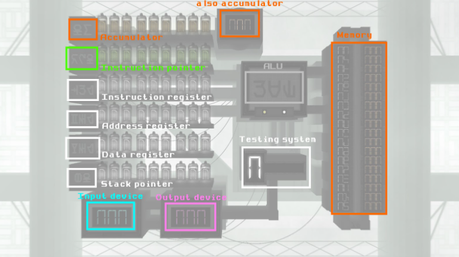
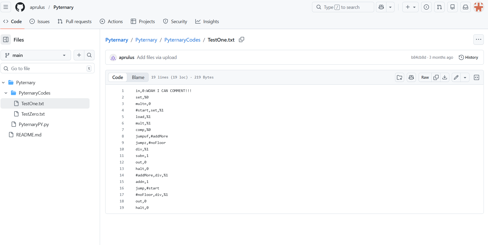

Pyternary
Deternary is a Ternary based Computation Machine Emulator. It was created within a rhythm game called Geometry Dash. I found it had multiple issues.
- You couldn't save your code. If you reset, you would lose all your progress.
- It was hard to program in, requiring a lot of patience to use.
- It was hard to understand. Each command, instead of being represented by a number, instead used symbols, which are really hard to read.

The Solution: Pyternary

Pyternary is a Python Based Interpretor that can convert files containing Pyternary code into Deternary code. It has multiple things that make it better to use than only Deternary.
- It is easier to code in. No symbols are required. It also can be coded as a TXT file, allowing you to code it just about anywhere
- It can be saved. You are able to save your files on your device, so they can be created and used whenever.
- You can comment in your code, allowing others (or yourself) to easily understand what certain things are doing.
- I added Variables, so you can saved numbers without any unneccessary work.
- I added Function Variables, allowing you to set a specific line to a function that can be called at anytime, including before it is introduced.
The Code
import time
from pynput.keyboard import Controller, Key
keyboard=Controller()
currentFile="Pyternary/PyternaryCodes/TestZero.txt"
splitterDelimiter=','
commentDelimiter=':'
varFunctSetter="#"
unknownNewPlace="%"
jumpButton="d"
leftButton=Key.left
rightButton=Key.right
clickingSpeed=0.04
varDict={}
everyLines=[]
trueFunctionsList=["none","in","out","load","set","addn","subn","multn","divn","uload",
"uset","add","sub","mult","div","jump","jumpz","jumpnz","jumpof",
"jumpuf","comp","push","pop","call","return","swap","halt"]
trueFunctions={"none":0,"in":1,"out":2,"load":3,"set":4,"addn":5,"subn":6,"multn":7,"divn":8,"uload":9,
"uset":10,"add":11,"sub":12,"mult":13,"div":14,"jump":15,"jumpz":16,"jumpnz":17,"jumpof":18,
"jumpuf":19,"comp":20,"push":21,"pop":22,"call":23,"return":24,"swap":25,"halt" :26}
def convertToDeternary(num):
higherOne=num//27
lowerOne=num%27
returner=str(higherOne)+","+str(lowerOne)
return returner
def jumpPress(amount):
for i in range(amount):
keyboard.press(jumpButton)
time.sleep(clickingSpeed)
keyboard.release(jumpButton)
time.sleep(clickingSpeed)
def leftPress(amount):
for i in range(amount):
keyboard.press(leftButton)
time.sleep(clickingSpeed)
keyboard.release(leftButton)
time.sleep(clickingSpeed)
def rightPress(amount):
for i in range(amount):
keyboard.press(rightButton)
time.sleep(clickingSpeed)
keyboard.release(rightButton)
time.sleep(clickingSpeed)
def main():
with open(currentFile,'r') as File:
for i, line in enumerate(File, start=0):
line=line.replace(' ','').replace('\n','').replace('\r','')
if commentDelimiter in line:
line=line[0:line.index(commentDelimiter)]
line=line.split(splitterDelimiter)
if line[0][0]==varFunctSetter:
varDict[line[0]]=i
print(line[0],"set to line",i)
line=line[1:]
everyLines.append(line)
else:
everyLines.append(line)
time.sleep(4)
rightPress(1)
counter=0
for line in everyLines:
jumpAmount=0
if line[0].isnumeric():
jumpamount=int(line[0])
jumpPress(jumpamount)
elif line[0] in trueFunctions:
jumpamount=trueFunctions[line[0]]
jumpPress(jumpamount)
else:
print("Unknown Command:",line[0])
rightPress(1)
if len(line)<3:
if line[1].isnumeric():
jumpAmounts=int(line[1])
elif line[1] in varDict:
jumpAmounts=varDict[line[1]]
elif "%"in line[1]:
nextFree=len(everyLines)+int(line[1][1:])
jumpAmounts=nextFree
else:
print("Unknown Data:",line[1])
jumpAmounts=0
jumpAmount=convertToDeternary(jumpAmounts)
elif len(line)==3:
if line[1].isnumeric():
upperData=int(line[1])
else:
print("Unknown Upper Data:",line[1])
upperData=0
if line[2].isnumeric():
lowerData=int(line[2])
else:
print("Unknown Lower Data:",line[2])
lowerData=0
jumpAmount=str(upperData)+","+str(lowerData)
else:
print("Too many data inputs:",line)
jumpAmount="0,0"
jumpAmount=jumpAmount.split(',')
jumpPress(int(jumpAmount[0]))
rightPress(1)
jumpPress(int(jumpAmount[1]))
leftPress(3)
jumpPress(1)
rightPress(1)
print(counter,trueFunctionsList[jumpamount].upper(),"(",jumpAmount,")")
counter+=1
print("Finished")
main()
Here are various variables that can be customized depending on what inputs they use for coding/macroing.
Converts a single number to a usable Deternary format (a base 27 number).
These are macros that can hit the various inputs I need to hit.
Opens up the selected file and grabs all the code.
Places the function number.
Places the Upper and Lower data selectors.
Moves the macro back to the line selector, along with moving the line to the next one.